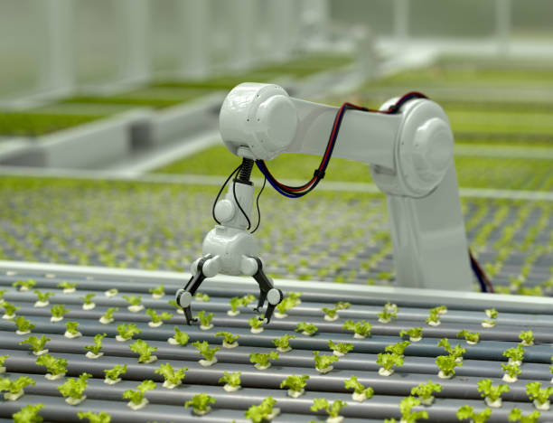
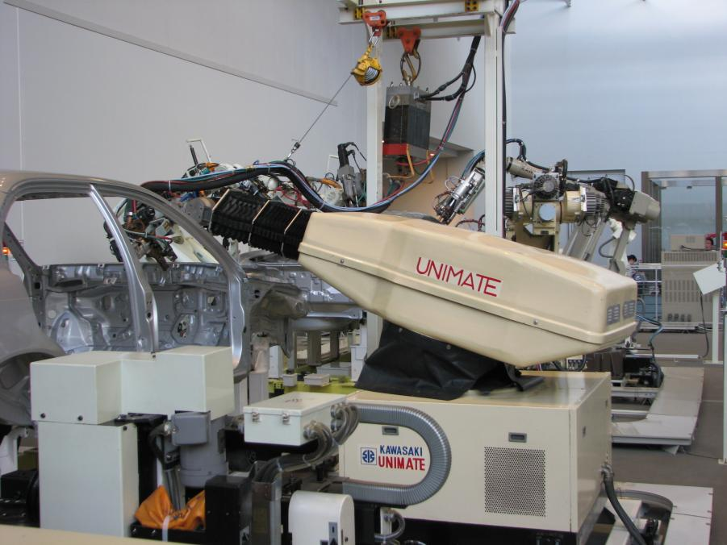

Robotique
Un peu d'histoire
Avant de se demander ce qu'est la robotique, commençons par un peu d'étymologie. Le terme robot a été inventé pour une pièce de théatre de science fiction écrite en 1920, dérivé du mot tchèque "Roboto" que l'on peut traduire par "travail, corvée". Quoi de plus normal que de donner ce nom aux machines capables aujourd'hui d'automatiser nos tâches ? Dans la pièce de Karel Čapek, les robots étaient des humains fabriqués par des propriétaires d'usine qui les exploitaient. Nulle précision sur la nature mécanique ou biologique de ces "robots", mais ces derniers finiront par se retourner contre leurs créateurs. C'est 22 ans plus tard en écrivant Runaround qu'Isaac Asimov créera le terme robotique et délaissa le syndrome de Frankenstein pour s'intéresser aux problèmes de société auxquels les humains se heurteront quand les robots seront omniprésents et auront automatisés la quasi-totalité de nos tâches.
Les premiers robots
En 1954 Georges Devol crée le premier robot, Unimate, qui sera livré à General Motors pour accomplir des tâches dangereuses pour les employés de l'usine. Unimate est un bras de levage hydraulique à commande électronique capable de répéter des séquences arbitraires de mouvements. Pourquoi abitraires ? Parce que d'après Joseph Engelberger, créateur d'Unimation Inc et père de la robotique, une machine automatisée capable d'un seul mouvement répété n'est pas un robot, mais un simple automate